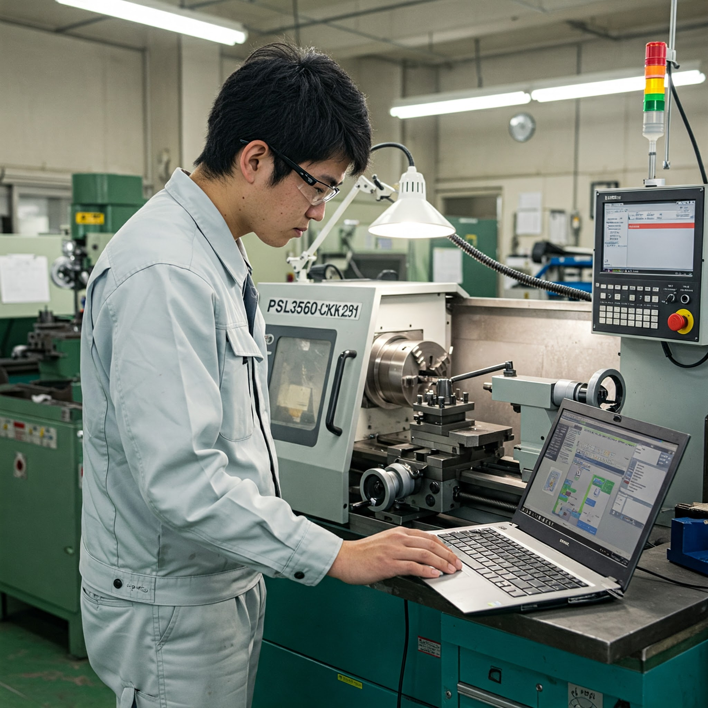

コースについて
エネルギー機械コースでは、私たちの生活を支えるさまざまなインフラや生産システムについて学びます。例えば、船舶・航空機・鉄道などの交通インフラや、食料・衣服・医薬品などを製造するための機械やプラント、さらには発電所の設計・運用に関わる技術を幅広く学習します。
また、持続可能な社会の実現を目指し、風力・太陽光・水力・地熱といった再生可能エネルギーの活用に加え、 水素エネルギーの効率的な利用や、廃棄物をエネルギー源として再生する技術についても焦点を当てます。
学びの内容
主な学習分野
エネルギー機械コースでは、実践的な学習を通じて、将来のエンジニアに必要な基礎力と応用力を身につけていきます。
- 機械製図・設計：機械部品の図面作成や設計の基礎を学びます。
- 工作実習：旋盤などの工作機械を使って、実際に部品を加工・製作します。
- 組み立て実習：設計・加工した部品を組み立て、動作する仕組みを学びます。
- 3DCAD：3Dモデリングや動作シミュレーションを通じて、設計の精度や完成イメージを確認する技術を学びます。
また、高学年になるとより専門性の高い内容にも取り組みます。
- 力学・熱・流体の実験：機械工学の基礎である物理現象を、実験を通じて体験的に学びます。
- 材料の熱処理・構造解析：強度や耐久性など、製品の品質に関わる重要な知識と技術を習得します。
- シミュレーション技術の活用：DX（デジタルトランスフォーメーション）に対応するため、従来は実験で評価していた現象をコンピュータ上で予測・分析できる素養を身につけます。
座学だけでなく、実験や実習を通して、実際に手を動かしながら学ぶことで、 「ものづくり」の楽しさを体験し、理論と実践を結びつける力を養います。
未来の展望
エネルギー機械コースで学ぶ内容は様々な分野で活躍することが期待されます。
- 自動車、鉄道、航空機、船舶など身近な「のりもの」の設計・製造
- 発電所・プラントなどエネルギー施設の設計・保守・運用
- 再生可能エネルギーや新エネルギーの開発、環境技術の研究
- 工場の自動化・スマート化など、次世代の製造ライン
持続可能な社会の実現に貢献できる、未来のエンジニアを一緒に目指しましょう！
大阪公立大学工業高等専門学校公式サイト
大阪公立大学工業高等専門学校の詳細については、以下の公式サイトをご覧ください。
公式サイトはこちら